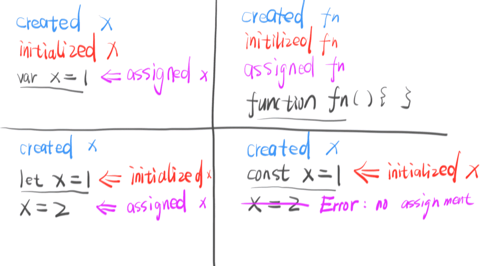
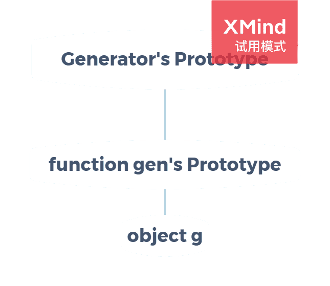
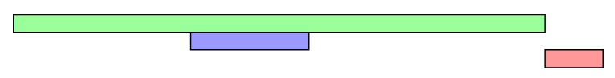
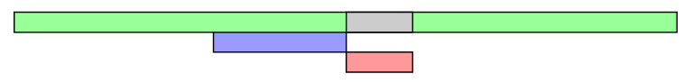
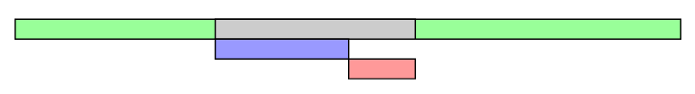

本文包含ES6(ES2015~ES2020)的let&const, 解构赋值, Symbol, 异步操作和Modlue部分, 是阅读ECMAScript6入门教程(阮一峰)记下的笔记, 记录下了一些我认为有价值的知识, 并不是ES6的教程.
let和const
let的出现确定了块级作用域, 若块级作用域A内函数B访问局部变量, 那么该函数B的作用域链包含块级作用域A, B函数类似于闭包. 下面的例子中, for循环父作用域中嵌套了5个子作用域, 每个作用域内i值不同, 所以每个函数中i值也不同. 如过使用var, 也想达到这样的效果, 就要使用闭包了.let a = [];
for(let i = 0; i < 5; i++) {
a[i] = function () {
console.log(i)
}
}
a[0]();//0let不像var和function那样存在变量提升, 但是存在“暂时性死区”, 即在一个作用域内, 只要使用let声明了变量, 那在声明之前变量是不能使用的.
其实实际的区别如下图, 图片来自https://zhuanlan.zhihu.com/p/28140450
//var的声明提升
console.log(a);//undefined
typeof a;//undefined
var a = 1;
//function的声明提升
b();//2
typeof b;//function
function b () {console.log(2)}
//let的暂时性死区
console.log(c);//ReferenceError
typeof c;//ReferenceError
let c = 3;
//测试未声明变量
console.log(d);//ReferenceError
typeof d;//undefined由于环境导致的差异太大, 所以优先使用
let和函数表达式, 避免在块级作用域内使用函数声明和var.块级作用域必须有大括号, 没有的话就不能使用
let.if(true) var a = 1;//没问题
if(true) let b = 2;//SyntaxError和
let一样,const不允许重复声明, 也存在暂时性死区.由于浏览器的顶层对象是
window/self, Node.js的顶层对象是global；在全局环境中this返回顶层对象, 但是Node.js模块和ES6模块中this指当前模块；非对象函数的this指向顶层对象, 但是严格模式下指向udefined. 所以顶层对象获取比较复杂. ES2020规定了globalThis作为顶层对象, 使顶层对象的获取更加方便.
解构赋值
如果等号右边是可遍历的结构, 就可以使用数组的解构赋值. 数组的解构赋值是按次序, 由位置决定赋值的.
let [, , [a], b] = [1, 2, [3, 4]];//a: 3, b: undefined
let [c, ...d] = [1, 2, 3];//c: 1, d: [2, 3]
let [e] = null;//TypeError数组解构赋值可以设置默认值：
let [a = 1, b = a] = [undefined];//a: 1, b: 1
如果等号右边的值是对象或可以转换成对象, 就可以使用对象的解构赋值. 对象的解构赋值是按照相同属性名赋值的.
let {a, a: {b: c}, d} = {a: {b: 1}, d: 2};//a: {b: 1}, b: undefined, c: 1, d: 2
let {sin, cos, tan} = Math; let {log} = console;
let {0: e} = [1, 2];//e: 1, 数组是对象, 所以可以这样使用‘对象解构赋值可以设置默认值：
let {a : b = 1} = {};//a: undefined, b: 1
对于已经声明的变量, 赋值时不要将大括号写在行首, 必要时把赋值语句用括号括起来：
let a;
({a} = {a: 1});字符串可以转换成String类型的对象, 所以也可以使用解构赋值：
let [a, b, c] = 'es6';//a: 'e', b: 's', c: '6'
let {0: d, length: l} = 'es6';//d: 'e', l: 3函数参数的结构赋值：
let fun = function ({a: c = 1, b = 2} = {a: 3, b: 4}) {
console.log(c, b);
}
fun({a: 5, b: 6});//5 6
fun({a: 5});//5 2
fun();//3 4
Symbol
在ES6中, Symbol类型是一种基本数据类型, 表示独一无二的值. Symbol类型不能和其他类型运算, 但是可以转换成字符串和布尔值.
let s0 = Symbol();
let s1 = Symbol('s');
s0 + 1;//TypeError
s1 + '1';//TypeError
String(s0);//'Symbol()'
String(s1);//'Symbol(s)'
Boolean(s0);//true
Boolean(s1);//true
s0.description;//undefined
s1.description;//'s'将Symbol类型用作对象属性名, 并且遍历：
const COLOR_GREEN = Symbol();
const COLOR_RED = Symbol();
let obj = {
[COLOR_GREEN]: '#0f0',
[COLOR_RED]: '#f00',
blue: '#00f'
};
Object.keys(obj);//['blue']
Object.getOwnPropertySymbols(obj);//[Symbol(), Symbol()]
Reflect.ownkeys(obj);//['blue', Symbol(), Symbol()]使用
Symbol.for()方法, 可以在全局环境下, 用字符串对Symbol类型变量进行登记. 使用Symbol.keyfor()方法, 可以获得已在全局登记的Symbol类型变量的标识值.let s0;
{
s0 = Symbol.for('s');
}
let s1 = Symnol.for('s');
s0 === s1;//true
Symbol.keyfor(s0);//'s'
let s2 = Symbol('s');
let s3 = Symbol('s');
s2 === s3;//false
s0 === s2;//false
Symbol.keyfor(s2);//ndefinedES6提供了11个内置的Symbol值, 指向语言内部使用的方法, 这里以
Symbol.replace为例介绍：//str.replace(from, to) 等同于 from[Symbol.replace](str, to)
let x = {};
x[Symbol.replace] = (...s) => console.log(s);
'123'.replace(x, '456');//['123', '456']
Promise
Promise是异步编程的一种解决方案, 一个Promise对象代表一个异步操作, 它有3种状态：
pending(进行中)fufilled(已成功)rejected(已失败), 后面两种统称为resolved(已定型), 但是一般我们用resolved(已定型)代表fufilled(已成功).在详述Promise之前, 需要明确
事件循环(Event Loop).事件循环(Event Loop)在浏览器和Node.js中的实现是有一些不同的, 参考这里来了解浏览器的实现, 参考这里来了解Node.js的实现.Promise新建后会立即执行, 其
then方法会按照Event Loop执行.Promise对象的then方法接受2个参数, 第一个会在Promise对象的fufilled状态时执行, 第二个会在其rejected状态时执行. 不过不建议这种写法, 一般then处理fufilled状态,catch处理rejected状态.在下面的代码中, p2会返回一个Promise对象, 所以其状态失效, 改为由p1决定. 所以, 代码执行后的第3秒, 会显示”Error: fail”. 错误会沿着异步操作链, 直到被第一个
catch捕获. 如果没有catch捕获, 那该错误会成为未捕获错误, 但不会中断程序执行.const p1 = new Promise(function (resolve, reject) {
setTimeout(() => reject(new Error('fail')), 3000)
})
const p2 = new Promise(function (resolve, reject) {
setTimeout(() => resolve(p1), 1000)
})
p2.then(result => console.log(result))
.catch(error => console.log(error))
// Error: failPromise.prototype.finally()方法, 不管异步操作最后抛出什么状态, 都会执行该函数回调函数内的操作, 并最终返回一个Promise对象. 如果前一个Promise对象有resolve值, 该Promise对象也有相应的resolve值; 如果前一个Promise对象有reject值, 那该Promise对象也有相应的reject值.Promise.resolve(2).then(v => {
return v;
}).finally(() => {
}).then(v => {
console.log(v)
})
//2Promise.all方法用于将多个Promise对象合为一个新对象. 只有所有的对象都变为fufilled状态时, 新对象才会变为fufilled状态; 当其中一个对象状态变为rejected状态时, 新对象会变为rejected状态. 如果传入参数不是Promise对象, 会使用Promise.resolve()将其转换为Promise对象. (下面的例子中, p0, p1, p3状态都是fufilled, p2状态是rejected.)let p0 = Promise.resolve(0);
let p1 = Promise.resolve(1);
let p2 = Promise.reject(2);
let p3 = Promise.reject(3).catch(e => e);
Promise.all([p0, p1])
.then(console.log).catch(console.error);//[0, 1], 第一个显示
Promise.all([p0, p2])
.then(console.log).catch(console.error);//2, 第三个显示
Promise.all([p0, p3])
.then(console.log).catch(console.error);//[0, 1], 第二个显示Promise.race()方法用于将多个Promise对象合为一个新对象. 只要其中有一个对象的状态改变了, 新对象就跟着改变. 如果传入参数不是Promise对象, 会使用Promise.resolve()将其转换为Promise对象. 该方法可以用于下面的设置最大延迟时间的操作:const p = Promise.race([
fetch('/resource-that-may-take-a-while'),
new Promise(function (resolve, reject) {
setTimeout(() => reject(new Error('request timeout')), 5000)
})
]);
p
.then(console.log)
.catch(console.error);Promise.allSettled()方法用于将多个Promise对象合为一个新对象. 只有其中所有对象的状态改变了, 新对象才跟着改变. 如果传入参数不是Promise对象, 会使用Promise.resolve()将其转换为Promise对象. 不关心异步操作结果, 只关心这些操作有没有结束, 就可以用这个方法.Promise.any()方法现在还未纳入标准(2020年), 它用于将多个Promise对象合为一个新对象. 只要有对象都变为fufilled状态时, 新对象就会变为fufilled状态; 当所有对象状态变为rejected状态时, 新对象会变为rejected状态. 如果传入参数不是Promise对象, 会使用Promise.resolve()将其转换为Promise对象.Promise.resolve()用于将现有变量转换为状态为fufilled的Promise类型的变量.- 如果现有变量是一个Promise变量, 则原样返回
- 如果现有变量不是Promise变量, 则返回一个resolve值为该变量值的Promise对象
Promise.resolve(v);
//等同于
new Promise(resolve => resolve(v));
Promise.reject()用于将现有变量转换为状态为rejectedPromise类型的变量.- 如果现有变量是一个Promise变量, 则原样返回
- 如果现有变量不是Promise变量, 则返回一个reject值为该变量值的Promise对象
Promise.reject(v);
//等同于
new Promise((resolve, reject) => reject(v));
Generator函数
Generator函数是异步编程的一种解决方案. 调用Generator函数并不会执行函数中的代码, 该函数返回的是一个继承自该函数原型对象的对象, 它们的关系如下图. 我们先定义一个Generator函数:
let gen = function* () {
let a = yield 1;
let b = yield 2 * a;
return b;
};
使函数内代码执行有以下几种方法(有遍历器接口就可以):- 调用
g.next()方法.每次调用该方法, 函数内代码都会由上次执行的位置开始, 直到遇到yield表达式, 求出值为止. 以上面函数为例, 第一次调用, 会执行yield 1表达式, 并且返回这一值.g.next()方法内的参数会作为上一次yield表达式的值. 以上面的函数为例, 第二次调用g.next(3), 首先用3替代yield 1这个表达式, 再把3赋给a, 再执行yield 2 * a表达式, 把结果6返回给调用函数, 然后暂停.let g = gen();
g.next();//{value: 1, done: false}
g.next(3);//{value: 6, done: false}
g.next(4);//{value: 4, done: true}
g.next();//{value: undefined, done: true} - 使用
for...of循环. 由于for...of循环会在yield表达式返回值的'done'字段为true时就停止, 所以不会包含return语句的值.for(let v of gen()) {
console.log(v)
}
/*
1
NaN
*/ - 使用
...扩展运算符. 效果同for...of.console.log(...gen());//1 NaN
- 使用
Aray.from(). 效果同for...of.Array.from(gen());//[1, NaN]
- 使用解构赋值. 效果同
for...of.let [x, y] = gen();
x;//1
y;//NaN
- 调用
如果想让Generator函数返回的遍历器抛出错误, 可以使用
Generator.prototype.throw()方法. 使用该方法抛出的错误是遍历器的内部错误, 可以在函数内部捕获, 如果函数内部没有捕获, 那么会在函数外部捕获. 如果错误没有被捕获, 会发生错误, 程序中止.(Promise内发生未捕获错误不会中止程序)Generator.prototype.throw()方法调用会自动执行一次Generator.prototype.next()方法.let gen = function* () {
try {
yield;
} catch(e) {
console.log('inner', e);
}
}
let g = gen();
g.next();
try {
g.throw(new Error(0));
g.throw(new Error(1));
} catch(e) {
console.log('outer', e);
}
//inner 0
//outer 1如果想让Generator函数提前结束, 可以使用
Generator.prototype.return()方法. 调用该方法后, 函数后面的语句都不会执行了. 如果有try...finally语句, 那就会执行finally代码块.(try...finally只有配合Generator.prototype.return()才有效)let gen = function* () {
try {
yield 1;
yield 2;
} finally {
yield 3;
}
yield 4;
}
let g = gen();
g.next();//{value: 1, done: false}
g.return();//{value: 3, done: false}
g.next();//{value: undefined, done: true}如果想在Generator函数内部再使用Generator函数, 可以使用
yield *表达式. 事实上, 只要有遍历器接口, 都可以使用该表达式.let inner = function* () {
yield 'inner0';
yield 'inner1';
}
let outer = function* () {
yield * inner();
yield * ['array'];
yield 'outer';
yield inner();//作为对比
}
for(let v of outer()) {
console.log(v);
}
/*
inner0
inner1
array
outer
inner(一个遍历器对象)
*/使用
yield *表达式, 将嵌套数组转变成按顺序的一维数组:let tree = [1, [2, 3], [4, 5]];
let unfold = function* fun (tree) {
if(Array.isArray(tree)) {
for(let t of tree) {
yield * fun(t);
}
}
else {
yield tree;
}
}
let arr = [...unfold(tree)];
console.log(arr);//[1, 2, 3, 4, 5]如果将Generator函数作为对象的属性, 可以按照以下格式简写:
let obj = {
* fun () {}
}
//等同于
let obj = {
fun: function* () {}
}如果想使用Generator函数的this, 也就是说使新建的对象拿到一些定义的数据, 可以采用以下原型模式来解决:
let gen = function* () {
yield this.a = 1;
}
let g = gen.call(gen.prototype);
g.next();
g.a;//1
//或者这样
let gen = function* () {
yield this.a = 1;
}
gen.prototype.a = 1;
let g = gen();
g.next();
g.a;//1即把需要定义的数据放到
gen函数的原型对象上, 由于遍历器对象g继承自gen函数的原型对象, 所以必然可以访问到新定义的对象.使用Generator函数实现状态机:
let day = (function* () {
let days = ['Mon', 'Tue', 'Wed', 'Thu', 'Fri', 'Sat', 'Sun'];
while(true) {
for(let i = 0; i <= 6; i++) {
yield days[i];
}
}
}())
day.next().value;//Mon
day.next().value;//Tue如果使用一般的函数或者对象, 都需要一个保存状态的变量, Generator函数由于自带暂停机制, 可以保存当前状态, 所以是最优雅的状态机实现方式.
关于错误处理, 一般情况下使用
try...catch语句来处理, 如果是Promise对象, 还可以使用其catch方法或者then方法来处理.
async函数
async函数是Generator函数的语法糖. 和Generator函数相比, async函数内置执行器, 也就是说它不用使用
next方法, 就可以自动执行函数内操作; Generator函数返回的是遍历器对象, 而async函数返回的是Promise对象, 更有利于异步操作. 下面是async函数的基本用法:let sleep = async function (t) {
await new Promise(resolve => {
setTimeout(resolve, t)
});
};
(async function exe () {
console.log('before');
await sleep(1000);//延迟1秒
console.log('after');
}());async函数内部return返回的值, 会作为返回的Promise对象的then方法回调函数参数, 如果使用await调用的话就是await语句的返回值; async函数内部的错误, 会被catch捕获.
let sleep = async function (t) {
await new Promise(resolve => {
setTimeout(resolve, t)
});
};
let getData = async function () {
await sleep(1000);
return 'data';
};
let errorOccurs = async function () {
await sleep(2000);
throw(new Error('error'));
};
//第一种用法
(async function () {
console.log(await getData());//data
}());
(async function () {
try {
await errorOccurs();
} catch (e) {
console.error(e);//Error: error
}
}());
//第二种用法
getData().then(console.log).catch(console.error);//data
errorOccurs().then(console.log).catch(console.error);//Error: error使用async函数和
Promise.all实现多任务并发执行:(async function () {
let tasks = [...];
try {
let result = await Promise.all(tasks);
console.log(result);
} catch (e) {
console.error(e);
}
}())
//或者
(async function () {
let tasks = [...];
let result = [];
try {
for( let r of tasks.map(async task => {await task();}) ) {
result.push(await r);
}
console.log(result);
} catch (e) {
console.error(e);
}
})
//传统写法, 实现同样的效果
let tasks = [...];
let result = [];
let finished = 0, ifError = false;
tasks.forEach((task, i) => {
task().then(r => {
result[i] = r;
finished++;
if(finished === tasks.length && !ifError) console.log(result);
}).catch(e => {
ifError = true;
console.error(e);
})
})
Module
使用
export规定模块的对外接口(模块中顶层this为undefined)://第一种写法
export var a = 1;
//第二种写法
var a = 1;
export {a};
//第三种写法
var _a = 1;
export {_a as a};
//export需要与模块内部变量建立一一对应关系, 所以下面的写法是错误的
export 1;
var a = 1; export a;使用
import加载模块:import {a as b} from './a.js';
import './a.js';
//不能改写接口, 下面错误
b = 1;
//如果接口是对象,是可以改其属性的
b.prop = 1;
//不能使用表达式和变量, 下面错误
let name = './a.js';
import { 'a' + '1' } from name;
//多import只会执行一次
import './a.js';
import './a.js';
//import有变量的提升(声明, 初始化和赋值全提升)
a();
import {a} from './a.js';模块的整体加载:
import * as all from './a.js';
//不允许对all进行修改操作, 下面均错误
all = {};
all.a = 1;使用
export default命令, 可以无需知道接口名字, 直接进行引用://下面三种效果是等同的
export default 1;
let a = 1; export default a;
let a = 1; export { a as default };
//使用方法
import _a from './a.js';
//export default实际上是定义了一个叫做default的变量, 所以下面是错的
export default var a = 1;export和import可以混合使用, 不过这只是做了个转接, 并没有引入变量, 所以不能使用这些变量.export {a as b} from './a.js';
//等同于
import {a} from './a.js';
export {a as b};
export * from './a.js';
export {default} from './a.js';
//等同于
import def from './a.js';
export default def;可以使用
import()函数按需异步加载模块,import()返回的是一个Promise对象.(async function () {
let {default} = await import('./a.js');
console.log(default);
}())浏览器加载模块, 除了可以使用
import外, 也可以使用script标签异步加载(遇到后即下载脚本, 但不会等待执行, 会直接执行下面的同步代码).//下面这种是页面渲染完再执行
<script type="module" src="./a.js" defer></script>
//下面这种是脚本下载完就执行, 可能中断HTML解析(DOM树的构建)
<script type="module" src="./a.js" async></script>
//默认情况下脚本的下载和执行都会中断HTML解析, 而且也会等待下载和执行的过程
<script type="module" src="./a.js"></script>以下图片来自https://juejin.im/post/6844903745730396174
defer:

async:

default:
ES6的模块是动态引用, 也就是说如果模块中的某个变量值发生了变化, 所有引用该模块的地方, 这个变量值都会变化.
由于Node.js有自己的CommonJS模块格式, 所以需要一些策略来对这两种模块加载方式进行区分.
.cjs的文件总是以CommonJS模块加载,.mjs的文件总是以ES6模块加载package.json文件的type字段为空或commonjs则.js文件以CommonJS模块加载, 如果type字段为module则.js文件以ES6模块加载
package.json有两个字段可以规定模块的入口文件:main和exports. 比较简单的模块, 可以只使用main字段:// ./node_modules/es-module/package.json部分代码
{
"main": "./src/index.js"
}
// ./app.js里面这样加载./node_modules/es-module/src/index.js文件
import esModule from 'es-module';复杂的模块, 可以使用
exports字段, 它的优先级高于main字段:// ./node_modules/es-module/package.json部分代码
{
"exports": {
"a": "./src/a.js",
"b_dir": "./src/b/"
}
}
// ./app.js里面这样加载./node_modules/es-module/src/a.js文件
import a from 'es-module/a';
// ./app.js里面这样加载./node_modules/es-module/src/b/index.js文件
import b from 'es-module/b/index.js';exports字段的别名如果是.就相当于main字段(主入口):{
"exports": {
".": "./src/index.js"
}
}
//也可以简写为
{
"exports": "./src/index.js"
}